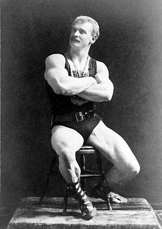
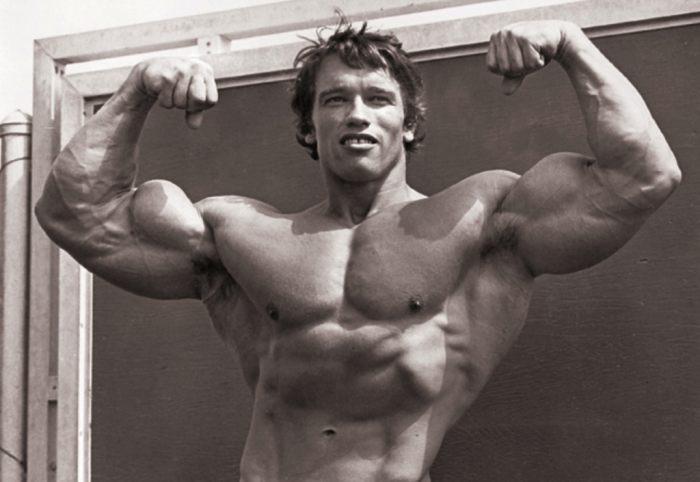
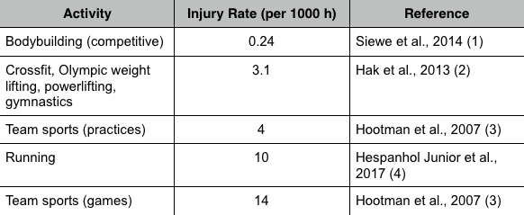

SHORT HISTORY OF BODYBUILDING
Bodybuilding developed in the late 19th century, promoted in England by German Eugen Sandow, now considered as the "Father of Bodybuilding". He allowed audiences to enjoy viewing his physique in "muscle display performances". Although audiences were thrilled to see a well-developed physique, the men simply displayed their bodies as part of strength demonstrations or wrestling matches.
Eugen Sandow, the "Father of Bodybuilding"
Bodybuilding became more popular in the 1950s and 1960s with the emergence of strength and gymnastics champions, and the simultaneous popularization of bodybuilding magazines, training principles, nutrition for bulking up and cutting down, the use of protein and other food supplements, and the opportunity to enter physique contests.
In the 1970s, bodybuilding had major publicity thanks to the appearance of Arnold Schwarzenegger, Franco Columbu, Lou Ferrigno, and others in the 1977 docudrama Pumping Iron.
Arnold Schwarzenegger, perhaps the most influential bodybuilder of this era
HEALTH BENEFITS
Bodybuilding makes not only a fit body, but also fit mind. The word bodybuilding says everything. It is so easy to understand the meaning of this word and what this sport is about. Bodybuilding is the best sport when it comes to making your body proportionally shaped and fit. More important, this great physical activity is about health, too.
BODY HEALTH
Some of the most remarkable health benefits, regarding the body, are:
- Bodybuilding decreases risk of developing coronary heart disease. By engaging in physical activities such as weight training and aerobic exercise you have more chance to reduce and control high blood pressure, obesity and high cholesterol.
- Bodybuilding has such great and healthy impact on muscle, bones and joints. Bodybuilding keeps your body and muscle strong and flexible. Bodybuilding and weight training can definitely help you with osteoporosis and arthritis.
- Even if bodybuilding does not increase your total lifespan, it will increase your functional lifespan, giving you the ability to be active and productive for the entirety of your life.
Arthur Peacock at 30 yeas (left) and at 80 years (right)
MENTAL HEALTH
The benefits of bodybuilding are not limited to physical improvements either:
- Bodybuilding exercise can boost your self-esteem and confidence, by helping you to develop positive self-image. Developing positive self-image will happen as the result of changes in body shape as you begin to lose weight or feel your body get leaner, stronger and better.
- Physical activity, weight training and aerobic exercise help releases of endorphin. Endorphin is a brain chemical which influences mood. Bodybuilding exercise can help you sleep better, reduce fatigue and psychological tension.
- A number of studies have shown that the benefits of bodybuilding-style training include reduced stress, anxiety and depression.
SAFETY
The first benefit of bodybuilding is its safety. The table below shows the injury rates for elite competitive bodybuilders versus Crossfit, Olympic lifting, powerlifting, gymnastics, team sports, and running.
Elite bodybuilders have an injury rate less than one-tenth that of Crossfit, Olympic lifting, powerlifting, or gymnastics. Running is touted as a “natural” activity, and bodybuilding is sometimes slandered as “unnatural,” yet runners have an injury rate 50 times that of elite bodybuilders!